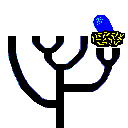

|
Versions, current and future |

Version 3.6
The official release of PHYLIP has now reached version 3.695.
Here are some of the ways in which the 3.6 release differs from the 3.5
releases:
- Documentation distributed as web pages, with links to other web pages.
- Much faster DNA and restriction sites likelihood programs.
- Two protein likelihood programs, one for a molecular clock.
- Gamma distribution of rates across sites in the protein distance program.
- Both user-defined rate categories and "regional" rate categories (chosen
by a Hidden Markov Model) allowed simultaneously in DNA and protein likelihood
programs.
- Gamma distribution of rates across sites used to pick rates and probabilities
for the Hidden Markov Model rate variation features in the DNA and protein
likelihood and distance programs.
- The same programs can also allow for a fraction of invariant sites.
- Reconstruction of ancestral sequences in the protein and DNA likelihood programs.
- The Shimodaira-Hasegawa correction for multiple user trees with the
Kishino-Hasegawa-Templeton test.
- A Minimum Evolution tree option in the distance matrix program.
- LogDet distance available as an option in the DNA distance program.
- A table of fraction of similarity between sequences can be calculated
in the DNA and protein distance programs.
- Neighbor-Joining trees now calculated at full speed (the previous
algorithm was unnecessarily slow).
- Generalized parsimony programs that can handle multifurcations nicely and can
provide estimates of branch lengths.
- An unordered multistate version of the discrete characters parsimony
programs, allowing up to 8 states plus "?".
- A restriction sites, fragments, RAPD, AFLP distance matrix program.
- The comparative method contrasts program now allowing for within-species
variability, not just assuming species means are exactly measured.
- The tree rearrangement program now handling multifurcating trees.
- The tree rearrangement program RETREE can now write out trees in either Nexus
or a preliminary version of a new XML phylogeny format.
- All input trees come from file "intree" instead of being in the input file.
- A better algorithm for drawing unrooted trees in Drawtree
- A tree distance program calculating the Symmetric Difference metric or
the Branch Score distance that takes branch lengths into account.
- The consensus tree program able to calculate Strict, Majority Rule, and
Ml consensus trees.
- Weights and Categories information for input files to be in separate
files called "weights" and "categories".
- Bootstrapping is possible by writing a multiple weights file.
rather than multiple data files (the latter still possible too).
- The bootstrap program will allow block-bootstrapping (to correct for
local correlation of rates in a molecule).
- Multiple-page trees in Drawgram/Drawtree so big posters can be made.
- Circular trees a la Swofford/Maddison as an option in Drawgram.
- Font and spline support for many draw program formats in Drawgram/Drawtree.
- Drivers for the POV ray-tracing program and for the VRML Virtual Reality
Markup Language available in the Drawtree and Drawgram programs.
- Restructured C code that reduces source code size by sharing more functions.
- Compilation support files (Makefile or project files) for the
Microsoft Visual C++, Borland C++,
CygWin Gnu C++ and Metrowerks Codewarrior compilers under Windows and the
Metrowerks Codewarrior compiler
in Mac OS.
- Native executables available for Mac OS X, both for Intel iMac and PowerMac
processors.
Future versions
As we move toward version 4.0, we intend to change in a number of directions:
- We will make sure that all programs can read
and correctly handle both rooted and unrooted user trees, with or without
the number of trees being at the front of the input tree file.
- The code
will become ever more structured and will increasingly be object-oriented,
though perhaps without ceasing to be in C.
- We will have more XML tree and data file support, including the ability
to read simple XML alignment and tree files.
- Many programs will be able to analyze data sets with multiple loci,
taking into account variation of rates of evolution across loci.
- We will be able to read in user trees and use them as the basis for
rearrangements. Used after bootstrapping, this will enable a version of
Kevin Nixon's method of searching tree space.
- We will have some codon-model programs for analysing synonymous / nonsynonymous
ratios of change in proteins.
- A maximum likelihood program will be produced to fit trees under the
threshold model of quantitative genetics, for 0/1 data.
- We will have a GUI (mouse/windows) front end program.
- We hope to have ever more support for parallel compilation of PHYLIP programs
as well, though this is currently hampered by the absence of a widespread
standard parallel computing software environment.
In general, we are now using a "stable/unstable" release structure. This
means that we keep fixing bugs in the current version of PHYLIP, resulting
in a series of minor releases (3.62, 3.63, 3.64, etc.) while also adding
new features to another version (3.7) which is to be the next major release.
This requires care to ensure that bug-fixes are made in both the current and
the future versions. We have hopes of releasing version 3.7a towards the
end of 2008. We will release alpha and beta releases of it in addition
to the 3.6 release, which will continue to be available as the official
version until the full release of version 3.7 later.
To see recent bug fixes and ones that are to be fixed in the next minor
release, look here.
![[Phylip icon here]](icons/PHYLIP.gif) ... to the PHYLIP home page
... to the PHYLIP home page